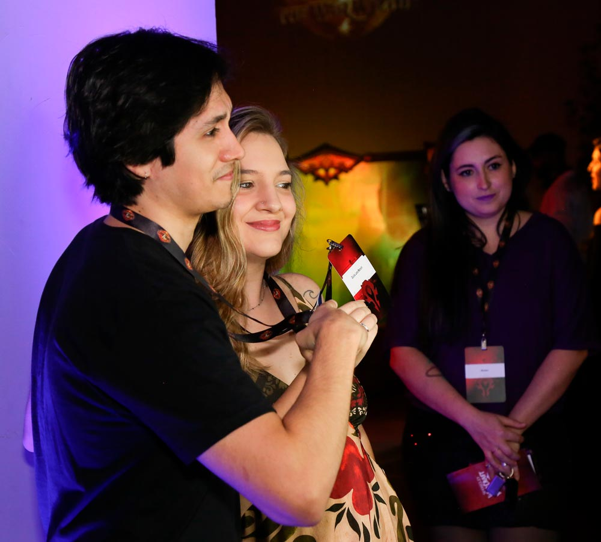
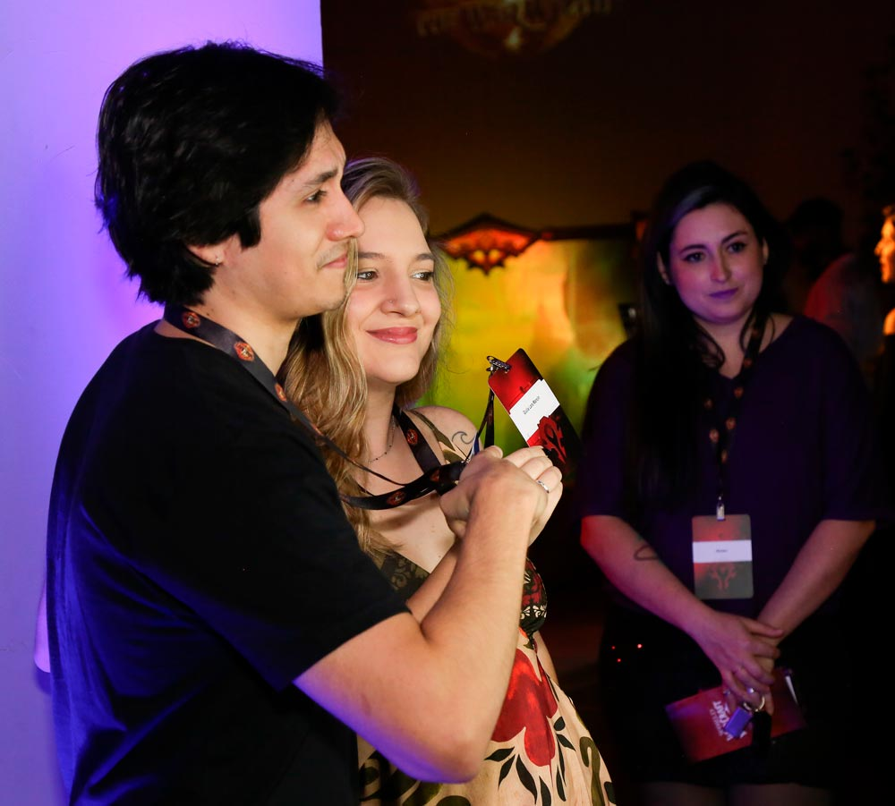

MINHA HISTÓRIA
MINHA HISTÓRIA

16 SET, 2024
Documentário World of Warcraft – Detalhes e bastidores criativos.
Histórias épicas e emocionantes revelam a paixão que moldou a comunidade de World of Warcraft, o maior MMORPG de todos os tempos.
Dirigido e escrito por Matheus Luiz "Skilu" Massuda o curta-metragem filmado no evento do lançamento de World of Warcraft the War Within captura/revela momentos inesquecíveis do fenômeno que marcou uma geração.
 



PONTO DE PARTIDA
Do convite ao lançamento do curta, tive pouco mais de um mês. Com o tempo contra mim, planejei cada detalhe (filmagens, entrevistas, takes e roteiro), eu precisava aproveitar cada minuto das 3h de gravação. Minha única certeza? Não perder nenhum momento valioso que desse vida ao curta.
JOGANDO (COM) O TEMPO
Com o material em mãos, comecei a transformar minhas experiências do evento em vídeo. Foi um desafio expressar sentimentos e ideias na tela em tão pouco tempo. Após horas de edição, percebi que não conseguiria finalizar o documentário completo em 2 dias. Precisava adaptar rápido! Olhei o material e pensei: Hey, está muito bom até aqui!
Foi nesse instante que finalizei correndo os últimos 20 segundos do vídeo que viria a ser um trailer para gerar expectativa, engajar a audiência e ganhar uma margem de tempo para a produção final.
Para minha surpresa, consegui uma parceria com o perfil oficial Warcraft Brasil para divulgar o conteúdo.
Fiz o poster de divulgação e publiquei na primeira oportunidade, a repercussão foi incrível!

ACREDITAR ERA A ÚNICA SAÍDA
Em mais uma semana, finalizei o que considero meu maior projeto até o momento: World of Warcraft: o Fenômeno que Revolucionou uma Geração. Guiar cada detalhe — do roteiro aos créditos, da trilha aos efeitos sonoros, das entrevistas à carga emocional de cada cena — me forçou a fragmentar o "caos" da obra em partes e concluir, passo a passo, algo à altura do que imaginei.
"Acreditar que somos capazes de realizar algo que (nem mesmo poderíamos imaginar que somos), foi o pensamento que mais me moveu ao longo de todo esse projeto. Que essa crença permaneça acesa para sempre em minha mente e coração."
World of Warcraft: o Fenômeno que Revolucionou uma Geração
Dirigi, roteirisei, editei e participei do meu documentário — World of Warcraft: o Fenômeno que Revolucionou uma Geração — uma experiência completa de produção criativa e gestão audiovisual realizada em parceria com Activision Blizzard , Theogames e apoio de IA.